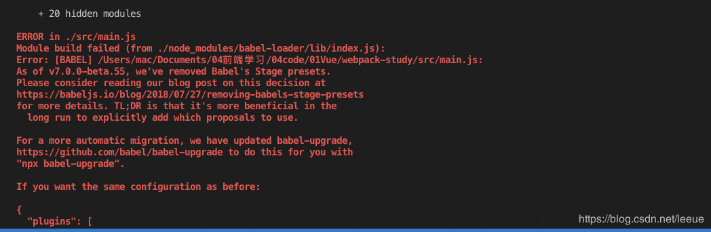
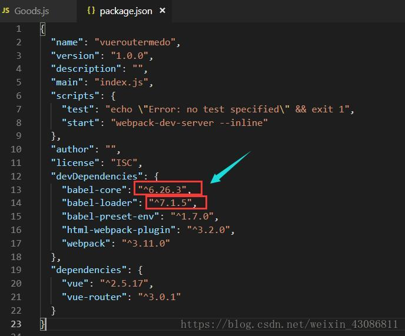

因为在webpack中，默认只能处理一部分es6的语法，一些更高级的es6和es7语法webpack不能处理，这时就需要第三方的loader即babel来帮助webpack来处理这些高级的语法
npm i babel-core babel-loader babel-plugin-transform-runtime -Dnpm i babel-preset-env babel-preset-stage-0 -Dmodule:{
rules:[
{test:/\.js$/,use:'babel-loader',exclude:/node_modules/}
]
} 作用：用来打包编译node_modules中所有第三方js文件，否则会非常消耗cpu，打包速度慢，项目会无法运行
{
“presets”:["env","satge-0"],
"plugins":["transform-runtime"]
}class Preson{
static info = {name:'sy',age:22}
}
console.log(Preson.name)！！！！！！！！！！！！！！！
结果非常不幸，出现了错误，哭哭哭，后来在网上找到了解决方法，原来是babel-core不对
转载自：https://blog.csdn.net/weixin_43086811/article/details/82154795
遇到的问题

应该将babel-core的版本改为7.5.1版本
npm i babel-loader@7.5.1 -D